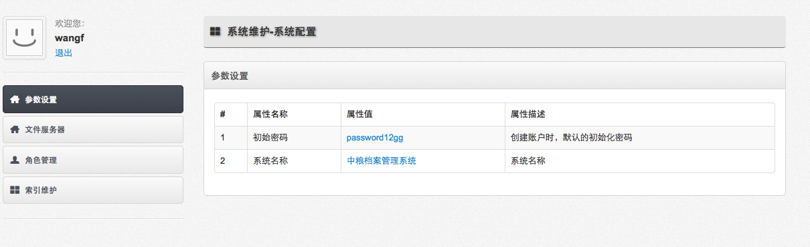
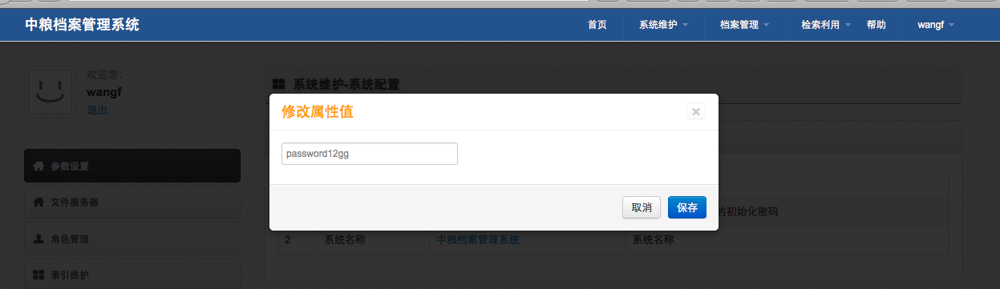
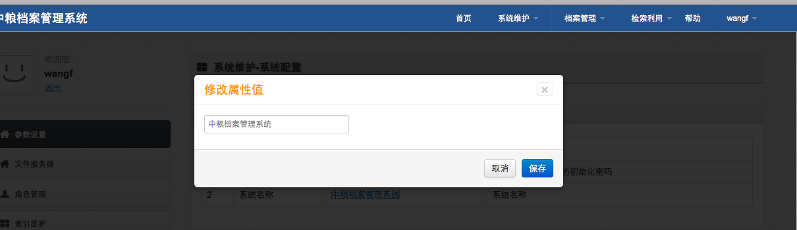

-
- 操作流程
- 点击首页功能菜单［系统维护－系统配置］，打开系统配置。
- 点击［参数设置］，打开参数设置功能。参数设置包括［初始密码］和 [系统名称]。
- 初始密码
-

- ［初始密码］:管理员在创建新帐户时，帐户的默认密码。创建帐户完毕，管理员可以修改帐户信息，帐户登陆后也可以自行密码。
- 点击［初始密码］的蓝色属性值。弹出初始密码框。
-

-
输入新密码，点击保存。
- [系统名称]
- [系统名称] :系统名称显示在登陆后，页面的左上角。
- 点击［系统名称］的蓝色属性值。弹出修改系统名称框。
-

-
输入新的系统名称，点击保存。